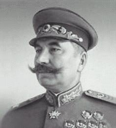

Буденный С.М.
Семён Михайлович Будённый
Cоветский военачальник, легендарный участник Гражданской войны, командующий Первой Конной армией, один из первых Маршалов Советского Союза, трижды Герой Советского Союза. Усилиями советской пропаганды стал легендой советского фольклора.
13.04.1883–26.10.1973
Родился на хуторе Козюрин Ростовской области. Служил срочную службу на Дальнем Востоке в Приморском драгунском полку, там же остался на сверхсрочную. Участвовал в русско-японской войне 1904—1905 гг. в составе 26-го Донского казачьего полка. В 1907 г. как лучший наездник полка отправлен в Петербург, в Офицерскую кавалерийскую школу. В Красной Армии с 1918 г. В период Гражданской войны прошел путь от помощника командира кавалерийского полка до командующего 1-й Конной армией. Буденный один из первых оценил преимущество кавалерии в новых условиях гражданской войны. Стал добиваться создания кавалерийских соединений, которые могли бы самостоятельно решать оперативные и стратегические задачи. Таким соединением стала Первая Конная армия. В невероятно трудных условиях она осуществила ряд классических наступательных операций, разгромила армии Мамонтова и Шкуро, Деникина, Врангеля и внесла большой вклад в победу красных над белогвардейцами. В историю военного искусства вошел тысячеверстный переход Первой Конной Армии с Кубани на Украину весной 1920 года, на Юго-Западный фронт. В 1920-х гг. Буденный провёл большую работу по организации конных заводов, которые в результате вывели новые породы лошадей – будённовскую и терскую. В 1932 г. окончил Военную академию им. Фрунзе. После Гражданской войны был помощником Главкома РККА по кавалерии и членом Революционного Военного Совета СССР, инспектором кавалерии РККА, командующим войсками Московского военного округа, выполнял обязанности члена Главного военного совета Народного Комитета Обороны СССР, заместителя, 1-го заместителя наркома обороны СССР. Во время Великой Отечественной войны входил в состав Ставки Верховного Главнокомандования, занимал ряд других должностей во фронтовых и высших органах военного управления. После войны был командующим кавалерией Советской Армии, инспектором кавалерии. В 1947–53 гг. одновременно был зам. министра сельского хозяйства СССР по коневодству. С 1934 г. кандидат в члены ЦК ВКП(б), с 1939 г. член ЦК. В 1952 г. потерял благоволение И.В. Сталина и был понижен до кандидата в члены ЦК. В 1954 г. уволен в почетную отставку – назначен в состав Группы генеральных инспекторов Министерства обороны. Маршал Советского Союза (1935), трижды Герой Советского Союза (1958, 1963, 1968). Награжден 15 орденами, многими медалями СССР, а также иностранными орденами и медалями, почетным революционным оружием. Умер 26 октября 1973 г. Похоронен на Красной площади в Москве у кремлёвской стены.
| Бубнов А.С.< Предыдущая | Следующая >Булла В.К. |
|---|